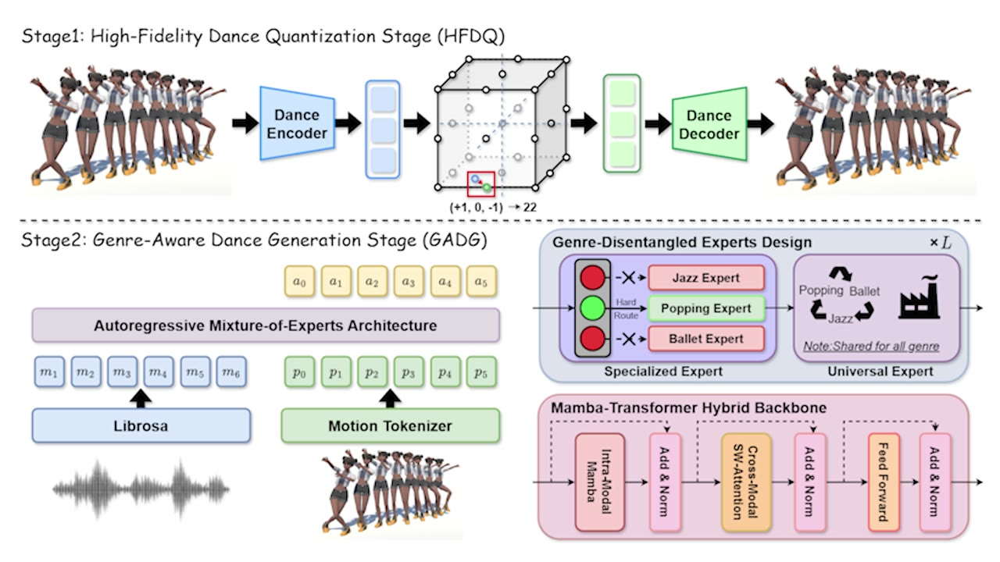

Dance Generality
Preserves shared choreographic structure across diverse dance styles.
NeurIPS 2025
Mixture-of-Experts Architecture for Genre-Aware 3D Dance Generation
1Renmin University of China 2Tsinghua University 3Malou Tech Inc
Abstract
Music-driven 3D dance generation has broad applications in choreography, virtual reality, and creative content creation, yet traditional methods often treat genre as an auxiliary modifier rather than a core semantic driver. This weak genre conditioning can compromise music-motion synchronization and disrupt genre continuity during complex rhythmic transitions.
MEGADance decouples choreographic consistency into dance generality and genre specificity. It combines a High-Fidelity Dance Quantization stage based on Finite Scalar Quantization with a Genre-Aware Dance Generation stage that uses Mixture-of-Experts and a Mamba-Transformer hybrid backbone, achieving strong dance quality and genre controllability on FineDance and AIST++.
Overview Video
Method

Preserves shared choreographic structure across diverse dance styles.
Uses genre-disentangled expert routing to strengthen style continuity.
Maps music to dance tokens with a Mamba-Transformer hybrid backbone.
Experiments
Citation
@article{tang2026megadance,
title={Megadance: Mixture-of-experts architecture for genre-aware 3d dance generation},
author={Tang, Xulong and Peng, Ziqiao and Hu, Yuxuan and He, Jun and Liu, Hongyan and others},
journal={Advances in Neural Information Processing Systems},
volume={38},
pages={10947--10969},
year={2026}
}